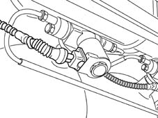

1042AB Check operation of methane cut out solenoid valve on canister
- Path
- Test > 10 ENGINE UNIT > 1042 METHANE GAS CANNISTER AND TUBES > 1042AB Check operation of methane cut out solenoid valve on canister
- Kind
- test / check procedure
- Applies to
- engines: 1.6 16v; all production periods; only with equipment: BIPOWER
- Interactive page
- https://sloeber94.github.io/elrnDB-fMltpl/en/#/186003370
Applies to: engines: 1.6 16v; all production periods; only with equipment: BIPOWER
Once the operation of the coil has been checked, check the operation of the moving parts of the soleniod (anchor and plunger), i.e. the mechanical part of the valve.
- Select methane operating mode on the instrument panel.
- Keep the engine running and close all the cocks on the cylinder except one.
- Wait for around 1 minute. If the vehicle switches normally to methane, the solenoid being tested has opened correctly and is allowing methane to flow through: now test the other solenoids.
- If the vehicle switches to petrol, this means that the solenoid on the cylinder with the open cock is locked in closed position. Although the solenoid is excited (methane operating mode requested), it is nevertheless locked: in this case, active it using active diagnosis to check the wiring/connections.
